图形学中的抗锯齿方法简谈
GAMES101 中有提到过光栅化阶段的抗锯齿方法，但讲得比较宽泛，希望通过这篇文章更细致地介绍图形学中的抗锯齿方法，更深入的理解反走样技术。
我们将首先回顾一下锯齿是什么，分析其产生原因，从而进一步探讨不同的抗锯齿方法如 SSAA、MSAA、FXAA、TAA 等。
预备知识
锯齿，是图像在渲染时，由于采样频率不足而导致图像边缘呈现锯齿化的现象，如下图。
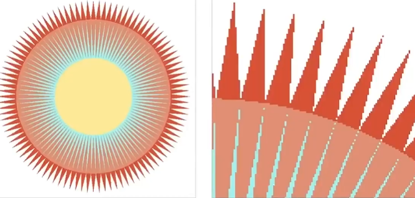
还要提到一个概念——采样，采样是将一个函数离散化的过程，即在一个连续的函数中，选择多个点获取其函数值，从而将一个连续的函数离散化。
最后，还要讲到频域这一概念，如下图所示，一张图像经过傅里叶变换，能从时域转换到频域上，频域的中心为低频信号，四周为高频信号，而应用不同的滤波器可以过滤相应的信号。
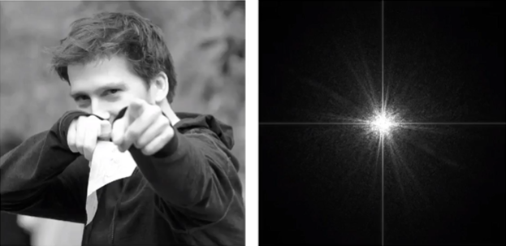
高通滤波器可以过滤低频信号，使得频域内仅保留高频信号，高频信息表示图像中出现较强变化的部分，即呈现图象中的轮廓边缘。
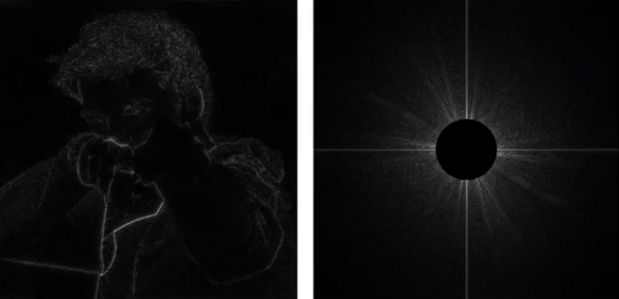
低通滤波器可以过滤高频信号，使得频域内仅保留低频信号，低频信息表示图像中不明显的边界特征，即图象的模糊显示。
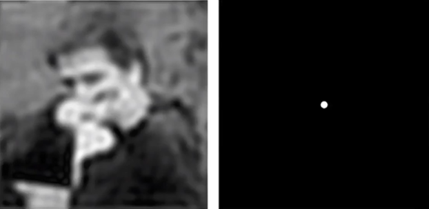
锯齿产生的原因
我们已经知道了锯齿是什么，为了解决锯齿的问题并引出抗锯齿的一系列方法，还需要进一步探索一下锯齿产生的根本原因。下图中，左边为原始信号，右边为该信号的频谱。
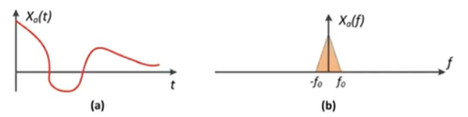
要对该信号进行采样，可以使用冲激函数(一种用于对连续信号进行线性表达的函数)，如下。
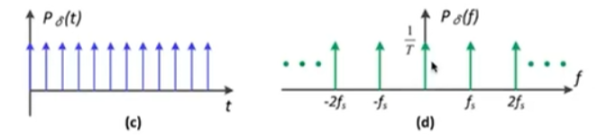
经过采样后，得到如下结果。
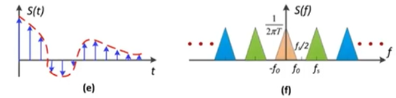
我们可以从 f 图看出，从频域的角度看，采样即为不断复制原始信号在频域上的频谱。
当我们（冲激函数）采样的频率不足时，即时域上的冲击函数间隔增大，表现在频域上为复制信号间隔减小，信号与复制信号间发生了混叠，影响了原频谱内容，从而导致了走样(锯齿)现象。

根据锯齿产生的原因，不难得出抗锯齿的核心思路：
1、提高采样频率，以增大频域内复制信号间的间隔，避免混叠
2、通过低通滤波器去除高频信号(将频谱图混叠部分去除)，即对图象模糊处理，再进行采样，如下图所示
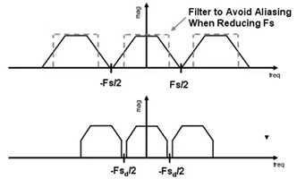
作为抗锯齿方法，从硬件上提升分辨率(即采样频率)显然并非是我们所想做的，接下来介绍四种抗锯齿的常用方法。
SSAA(super sample anti-aliasing)
SSAA 是一种较为原始的、通过在一个像素内采样多个点来提升采样频率（并非直接提升硬件分辨率）的抗锯齿方法。
假设渲染目标的分辨率是 19201080 ，我们可以将场景渲染至 38402160 (两倍，总共四倍)的分辨率，之后再将渲染图片放缩为原分辨率，问题自然就迎刃而解了。
再详细一些，在 SSAA 中，对每一个像素取 n 个子采样点，再对每一个子采样点分别着色计算，最后将它们的颜色取平均值作为该像素点的颜色值。
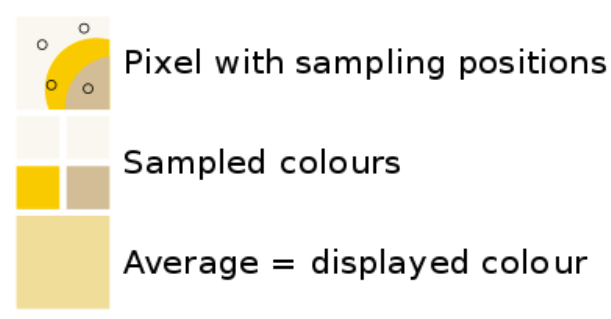
过采样的信号必须重新降采样到指定分辨率，这样才可以显示它，这个过程叫解析(resolving)。
SSAA 得到的效果十分可观，但同样缺陷也很大：因为每个子采样点都要计算一次着色，一个像素的开销变为了原来的 n 倍，性能的开销急剧增大。正因如此，由于 3D 场景庞大的计算量， SSAA 难以应用在 3D 场景当中，但是在 2D 渲染中，这种简单粗暴的方法仍然有一席之地。
MSAA(Multisampling Antialising)
在介绍 MSAA 之前，需要先说明两个概念，覆盖信息(coverage)和遮挡信息(occlusion)：覆盖信息描述了采样点是否与目标图形重叠，在显卡中，覆盖是通过测试一个采样点是否在像素的中心来实现的，可以通过做叉积得到；遮挡信息描述了采样点是否被目标图形所遮挡，也就是我们熟悉的 Z-buffer。两者一起决定了一个图形的可见性。
MSAA 是 SSAA 的改良，前文提到 SSAA 的开销巨大，而 MSAA 针对 SSAA 中存在的不必要计算进行了优化。
SSAA 对于每个子采样点都要进行着色，而 MSAA 只需对每个像素进行着色，只执行一遍 pixel shader ，而对于那些子采样点只计算覆盖信息(coverage)和遮挡信息(occlusion)，以两者的结果来决定是否将像素点的颜色值写入该子采样点。
就光栅化而言， MSAA 跟 SSAA 的方式差不多，覆盖和遮挡信息都在一个更大分辨率上进行。对于覆盖信息来说，硬件会对每个子像素根据采样规则生成 n 个子采样点。
下图展示了一个使用旋转网格(rotated grid)(一种采样规则)采样方式的子采样点位置。
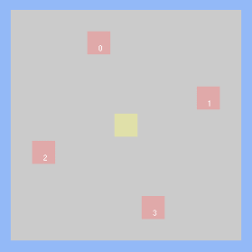
三角形会与像素的每个子采样点进行覆盖测试，生成一个二进制覆盖掩码，表示被三角形覆盖的像素部分。
紧接着是深度测试，在每一个通过覆盖测试的子采样点的位置上，三角形三个顶点进行插值计算出该点三角形的深度，并且跟 z-buffer 中的深度信息进行比较，判断其遮蔽关系。
由于深度测试是在每个子采样点的级别而不是像素级别进行的，深度 buffer 必须相应地增大以来存储额外的深度值，在实现中，这意味着深度缓冲区是非 MSAA 情况下的 n 倍。
以上内容 MSAA 与 SSAA 并无大异，接下来才是 MSAA 与 SSAA 的区别和优化部分。
MSAA 开始与超级采样不同的地方在执行像素着色器时。在标准 MSAA 情况下，不会为每个子样本执行像素着色器。相反，对于三角形覆盖至少一个子样本的每个像素，像素着色器仅执行一次。或者换句话说，它对覆盖掩码非零的每个像素执行一次。
此时，像素着色以与非 MSAA 渲染相同的方式发生：顶点属性被插值计算到像素的中心，并交由像素着色器，用于获取纹理和执行光照计算。这意味着启用 MSAA 时像素着色器成本不会大幅增加，这是 MSAA 优于 SSAA 的主要优势。
尽管我们对每个覆盖的像素仅执行一次像素着色器，但在渲染目标中仅存储每个像素的一个输出值是不够的。我们需要渲染目标支持存储多个样本，以便我们可以存储来自可能部分覆盖单个像素的多个三角形的结果。因此，MSAA 渲染目标将有足够的内存来为每个像素存储 N 个子样本。渲染目标中的每个子样本都映射到光栅化期间使用的子样本点之一，以确定覆盖范围。当像素着色器输出其值时，该值仅写入覆盖测试和深度测试均通过该像素的子样本。
如下图例子，使用 MSAA 后，共有两个子采样点通过了覆盖测试和深度测试，因而计算出的像素颜色只写入了这两个子采样点；若所有样本都被覆盖了，则所有子采样点都会被写入计算出的像素颜色值。

与 SS 一样， MS 的信号必须在显示之前重新采样到输出分辨率。对于 MSAA，此过程称为解析渲染目标。在最早的版本中，解析过程是在 GPU 上的固定功能硬件中执行的。常用的过滤器是一个 1 像素宽的盒式过滤器，它本质上等同于对给定像素内的所有子采样点进行平均。经过该操作后，每个像素点的颜色值变为插值计算的原颜色值乘以通过两个测试的子采样点占总采样数的比例。
经过 MSAA 后，最终能得到下图所示的结果
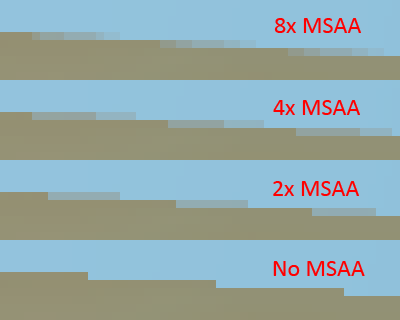
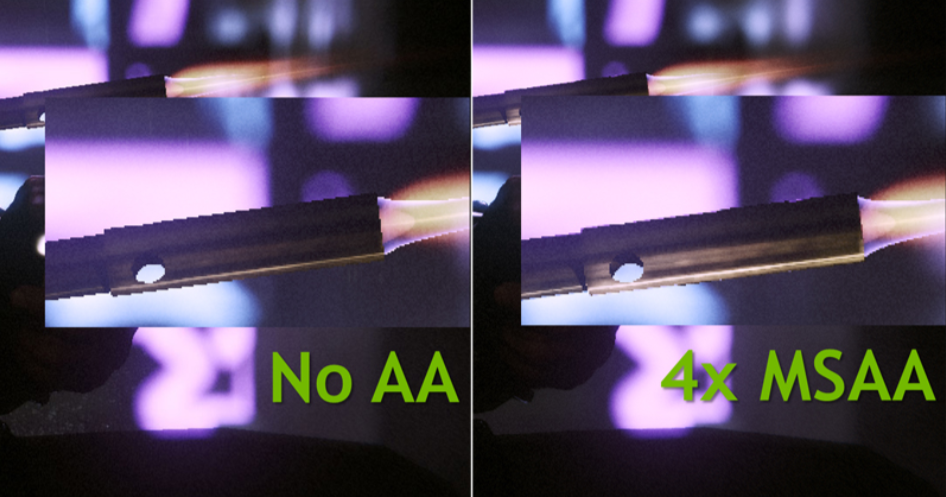
对于三角形边上的像素，你会得到一个渐变的颜色值，渐变的颜色数量取决于子采样点的个数。还有一点要注意的是，整个 MSAA 并不是在光栅化阶段就可以完成的，它在这个阶段仅仅只是生成覆盖信息。之后还要计算像素颜色，根据覆盖信息和深度信息决定是否将像素颜色写入子采样点。
整个完成后再通过某个过滤器进行降采样得到最终的图像。
参考文章：
https://www.cnblogs.com/ghl_carmack/p/8245032.html#
https://mynameismjp.wordpress.com/2012/10/24/msaa-overview/
FXAA(Fast Approximate Anti-Aliasing)
FXAA被用作最终渲染过程，该过程仅将呆有锯齿的渲染图像作为输入，并输出抗锯齿版本。主要思想是检测渲染图像中的边缘并将其平滑。此方法快速有效，但会使纹理细节模糊。
FXAA着色器中的大多数计算将依赖于从纹理读取的像素的亮度，以0.0到1.0之间的灰度表示。
考虑到人眼对每个波长的敏感度范围，将亮度定义为，
是红色，绿色和蓝色分量的加权总和。此外，我们将在感知（而非线性）空间中使用它的值，并通过平方根近似逆伽马变换，从而得到以下代码：
1 | float rgb2luma(vec3 rgb) |
我们有两种方法来计算有限数量像素之间的颜色值：
①最近邻算法，获取最相近像素的颜色(下图左)
②将该像素点周围最近的四个像素点进行双线性插值，计算得到目标颜色(下图右)
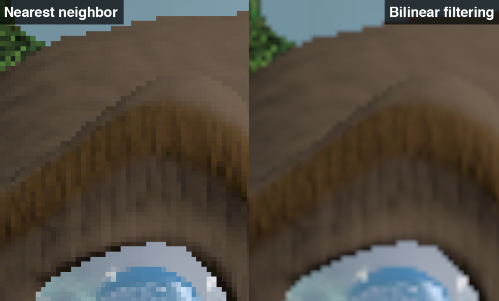
作为一种快速的抗锯齿方法，FXAA最大的特点就是仅对输入图像中的物体边缘进行抗锯齿操作，既然如此，第一步即是找出图像的边缘。
我们以一个简单的示例来作为讲解对象，以方便对于FXAA算法更好的理解。
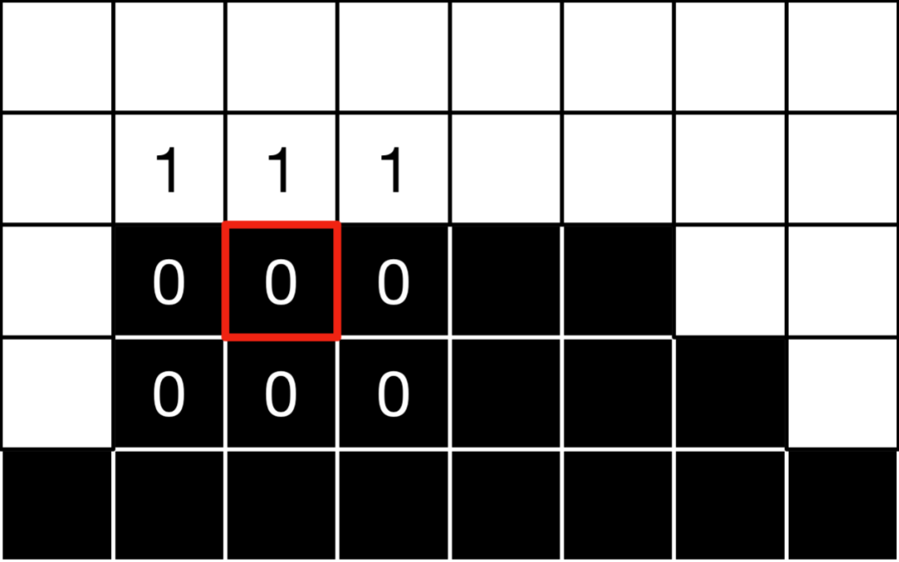
如上图所示，为我们输入的图像，红框为我们当前正在操作的像素点。为了检测边缘，我们需要提取与红框像素相邻的四个像素点的颜色值，并找出其中的最大，最小值，作差得到该像素点的局部对比度值。
之后将局部对比度值与预设阈值(与最大亮度成正比，例如最大亮度为1时，阈值为0.6，那么最大亮度为10时，阈值为6)进行对比，若局部对比度值低于预设阈值，则不会进行抗锯齿操作；还有一种情况，当检测区域较暗时，锯齿现象并不明显，为了节省开销，我们也不在这种像素点进行抗锯齿，即局部对比度值低于绝对阈值(不受最大亮度影响，受人眼观测的限制)，同样也不进行抗锯齿，在这种情况下，将从当前像素的纹理读取的颜色直接输出。
两个全大写常量的推荐值是：
EDGE_THRESHOLD_MIN = 0.0312(绝对阈值，与最大亮度无关)
EDGE_THRESHOLD_MAX = 0.125(预设阈值，与最大亮度成正比)
得到代码如下：
1 | vec3 colorCenter = texture(screenTexture,In.uv).rgb; |
对于我们的示例像素，最小值为 0，最大值为 1，因此范围为 1，因此，所以我们将执行 AA 。
找到了在边缘上的像素点之后，我们还需要知道该边缘的方向，来判断是垂直还是水平，为此，需要对当前像素为中心的九宫格内的另外八个邻近像素颜色值进行计算
- 水平的： |(upleft - left) - (left - downleft)| + 2 * |(up - center) - (center - down)| + |(upright - right) - (right - downright)|
- 垂直的： |(upright - up) - (up - upleft)| + 2 * |(right - center) - (center - left)| + |(downright - down) - (down - downleft)|
这两个量中最大的一个将给出边缘的主要方向。
1 | // Query the 4 remaining corners lumas. |
对于我们的示例，我们有：
- 水平 =
|-2*0+0+1| + 2*|-2*0+0+1| + |-2*0+1+0| = 4 - 垂直 =
|-2*0+0+0| + 2*|-2*1+1+1| + |-2*0+0+0| = 0
因此边缘是水平的。
确定了边缘大致的方向，还需要确定更准确的方向，因为当前像素不一定正好在边缘上。所以下一步是确定与边缘方向正交的哪个方向是真正的边缘边界。计算 crrent 像素每一侧的梯度，最陡峭的地方可能是边缘边界。
1 | // Select the two neighboring texels lumas in the opposite direction to the local edge. |
对于我们的示例，我们有gradient1 = 0 - 0 = 0和gradient2 = 1 - 0 = 1，因此变化对上邻居和的影响更大gradientScaled = 0.25。
最后，我们沿这个方向移动半个像素，并计算此时的平均亮度。
1 | // Choose the step size (one pixel) according to the edge direction. |
对于示例来说，平均局部亮度为0.5*(1+0) = 0.5，并且沿 Y 轴正向应用 0.5 偏移。
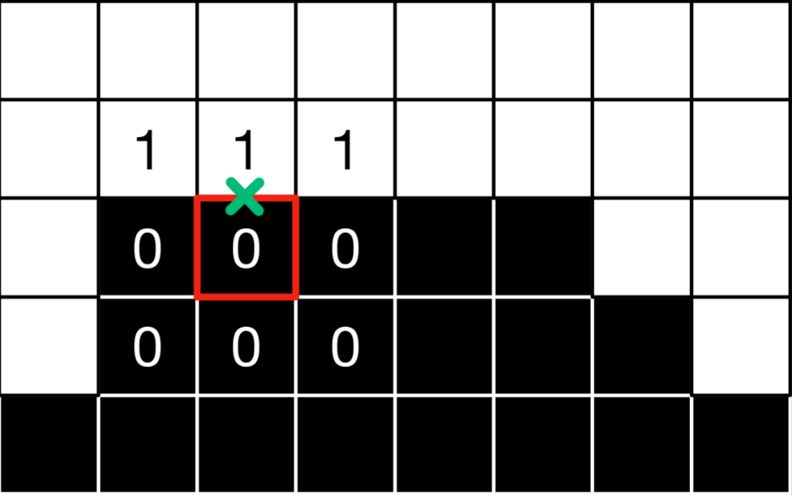
接下来我们就需要沿着边缘的主要方向进行探索。我们在两侧方向上分别探测一个像素，查询新坐标处的亮度，计算亮度相对于上一步的平均亮度的变化。如果这个变化大于局部梯度，我们就已经到达了这个方向的边缘并停止了。否则，继续将 UV 偏移增加一个像素。
1 | // Compute offset (for each iteration step) in the right direction. |
在示例中，我们得到lumaEnd1 = 0.5 - 0.5 = lumaEnd2 = 0.0 < gradientScaled（由于读取纹理时的双线性插值，亮度为 0.5），因此我们在两侧继续进行迭代。
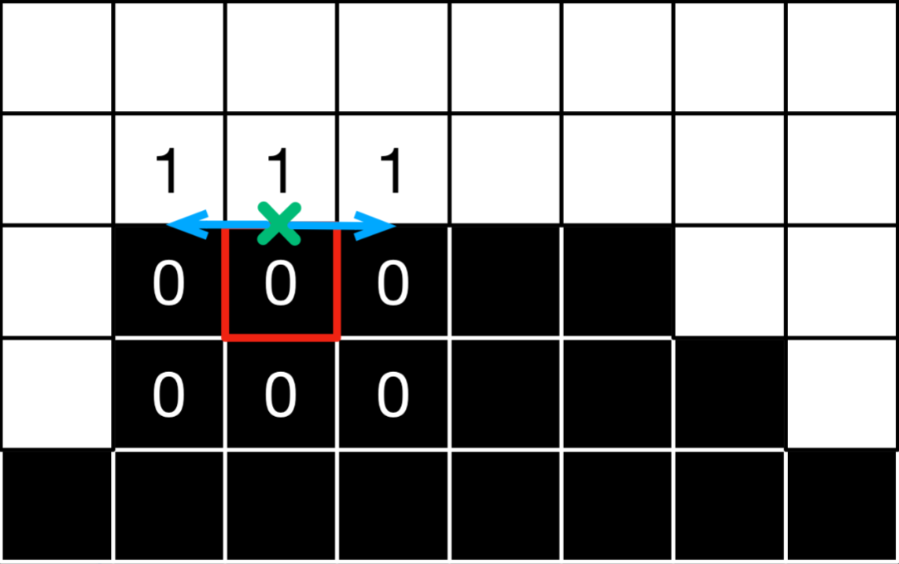
我们不断迭代，直到到达边缘的两端，或者直到达到最大迭代次数。为了加快速度，可以选择不断地增大步长，从而更快地找到边缘末端。
1 | // If both sides have not been reached, continue to explore. |
在示例中，我们获得lumaEnd1 = 1-0.5 = 0.5 >= gradientScaled，因此我们可以停止在左侧探索。在右边，我们必须再迭代两次以满足条件。
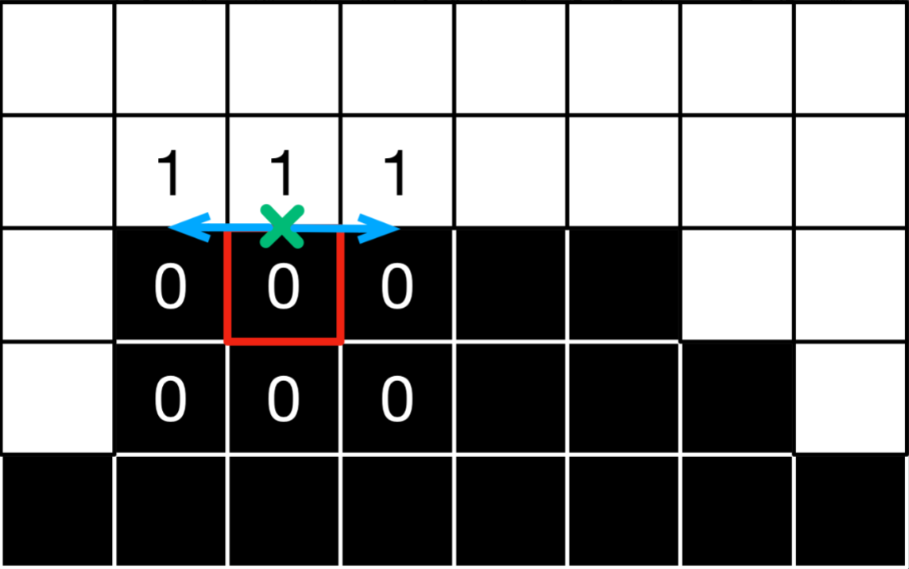
之后计算在两个方向中每个方向达到的距离，并找到最近的端点。估计边缘长度，以及与最近末端端点地距离和边缘长度的比值。这给了我们一个关于当前像素是在边缘的中间还是靠近末端的提示。越接近末端，末端应用的 UV 偏移越大。
1 | // Compute the distances to each extremity of the edge. |
对于示例像素，我们得到distance1 = 2,distance2 = 4，因此边缘的末端在左侧方向（方向 1）上更近，我们有pixelOffset = - 2 / 6 + 0.5 = 0.1666
还有一个额外的检查，以确保周围观察到的亮度变化与当前像素的亮度一致。否则我们可能走得太远了。
1 | // Is the luma at center smaller than the local average ? |
对于像素，中心亮度较小，由于末端亮度不为负，我们确实有(0.5 < 0.0) != isLumaCenterSmaller并且偏移计算是有效的。
一个额外的计算步骤允许我们处理子像素混叠，例如当细线在屏幕上混叠时。在这些情况下，将在 3x3 邻域上计算平均亮度。在从中减去中心亮度并除以第一步的亮度范围后，这给出了一个子像素偏移。与整个邻域的范围相比，平均值和中心值之间的对比度差异越小，区域越均匀（即没有单个像素点），偏移量越小。然后对该偏移量进行细化，我们保留上一步和本步骤中较大的偏移量。
1 | // Sub-pixel shifting |
在该示例中，lumaAverage = (1/12)(2*(1+0+0+0)+1+1+0+0) = 4/12 = 0.333, 和subPixelOffset1 = 0.333-0.0/1.0 = 0.333, 因此subPixelOffsetFinal = 0.75*((-2*0.333+3.0)*(0.3333)^2)^2 = 0.0503, 并且最大偏移量为0.1666。因此没有检测或处理子像素混叠。
最后，我们在与边缘正交的方向上相应地偏移 UV，并在纹理中最后一次读取。
1 | // Compute the final UV coordinates. |
对于所研究的像素，这给出了强度0.1666*1 + (1-0.1666)*0 ≈ 0.1666。
如果我们将此方法应用于小图像的所有像素，我们将得到以下值：
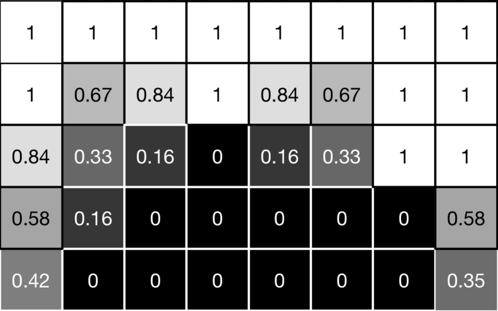
以及以下视觉结果：
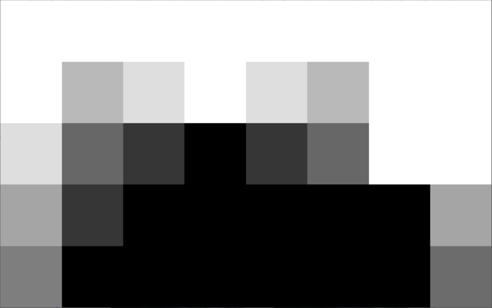
实际应用中的效果(左侧为未AA结果，右侧为FXAA结果)：
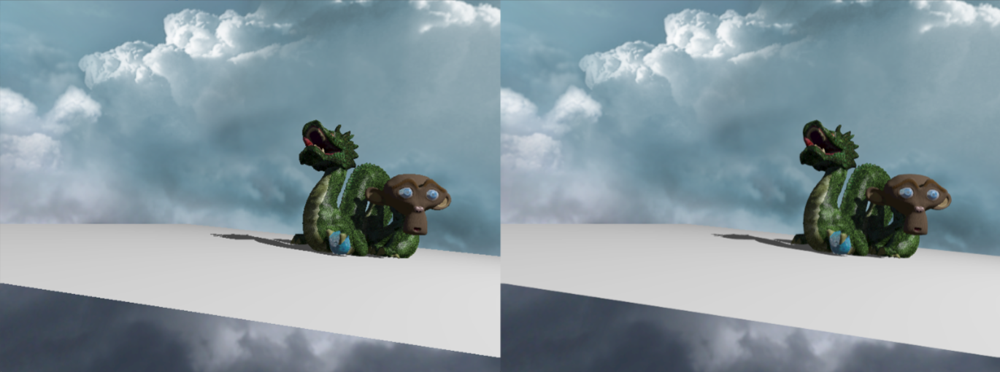
参考文章：http://blog.simonrodriguez.fr/articles/30-07-2016_implementing_fxaa.html
TAA(Temporal Antialiasing)
帧间抗锯齿技术，是通过加权混合相邻多帧达到抗锯齿效果，从理论上解释就是将计算量分摊(Amortized)至多帧的超采样
帧间抗锯齿技术的实现依赖于帧间相关性(frame-to-frame coherence)。我们看到的视频或者游戏画面，上一帧画面中绝大部分内容也会出现在下一帧画面中，通常是平滑过渡的，比较少出现突变。
帧间抗锯齿技术的核心思想就是将运算量分摊至多帧，任意一帧只计算一个像素点，随着t帧的累积，就有t个采样像素，再混合结果，就相当于做了t个子像素的超采样。当然，每帧中像素需要做一定的抖动(Jitter)，不然不同帧相同位置的像素值就完全一样，也就没有了分摊多帧的意义。通过对像素分摊至多帧的超采样，来提高采样效率，达到缓解锯齿的目的。
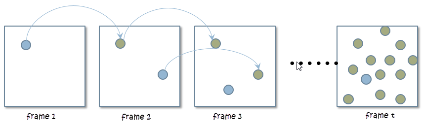
尽管通过分摊超采样的方法，将计算量分摊到了不同帧，但是保存多帧也是不切实际的。那就有了只混合相邻两帧的思路，本篇文章分别称之为当前帧和历史帧(History Frame)。
假设上一帧是已降噪的，并复用上一帧的数据，使用motion vectors(即为下文的坐标变换矩阵)来找到上一帧的位置，从而显著提升了SPP。需要计算当前帧上的该像素的世界坐标，如果当前坐标可从G-buffer(指渲染时免费/花费极小代价获取的辅助信息，例如每像素深度、法线、世界坐标等，注意仅仅只有屏幕空间的信息)直接获取，那就直接提取，若不行，通过$s=M^{-1}V^{-1}P^{-1}E^{-1}x$来计算该像素的世界坐标，其中的M，V，P，E矩阵都是已知的，之后再通过$x’=E’P’V’M’s’$得到该像素点在上一帧的对应位置，之后通过线性插值来计算当前帧的值。
规定~：unfiltered，-：filtered
即$\overline{C}^{(i)}=Filter[\widetilde{C}^{(i)}]$
插值之后为：$\overline{C}^{(i)}=\alpha \overline{C}^{(i)}+(1-\alpha)\overline{C}^{(i-1)}(\alpha=0.1-0.2)$(1)
因此80%-90%都由上一帧贡献，其中前一项为当前帧filter后的值，后一项为上一帧降噪的值，线性插值得到当前帧降噪后的值。
称这种方法为指数平滑滤过(Exponential Smoothing Filter)，其中，α是一个加权值，称为指数平滑系数，可以是一个固定值，也可以是一个自适应变化的值。它有点类似于累积缓存器(Accumulation Buffer)的原理，不断累积结果。
至此，已经得到当前帧像素在历史帧中的位置，也就容易根据历史帧采样到历史帧像素值。但是，由于每帧渲染时有像素抖动、模型运动、渲染环境变化(例如光照条件)等，它们会导致渲染结果发生变化，此时得到的历史帧像素就可能不具参考性。如下图所示，当前帧位置p的像素，在历史帧对应位置的像素被遮挡住了，那么重投影得到的历史帧像素与当前帧像素无法对应。那么，就需要一个验证历史帧像素并修正的阶段，修正(Rectify)历史帧像素值，再将它代入等式1算出最终结果。
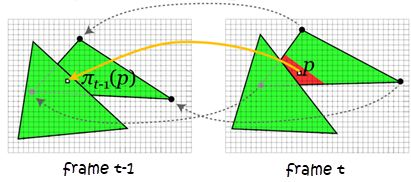
重新复盘下帧间抗锯齿技术的流程，对镜头进行抖动，渲染场景至主缓存中；如果模型发生运动，需要将渲染运动模型的运动矢量存至速度缓存。在一个TAA的后处理历程中，通过重投影获取当前帧像素在历史帧中的位置，获取历史帧像素，验证并修正历史帧像素，将历史帧像素和当前帧像素根据等式1加权混合，输出结果。
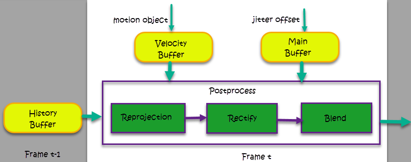